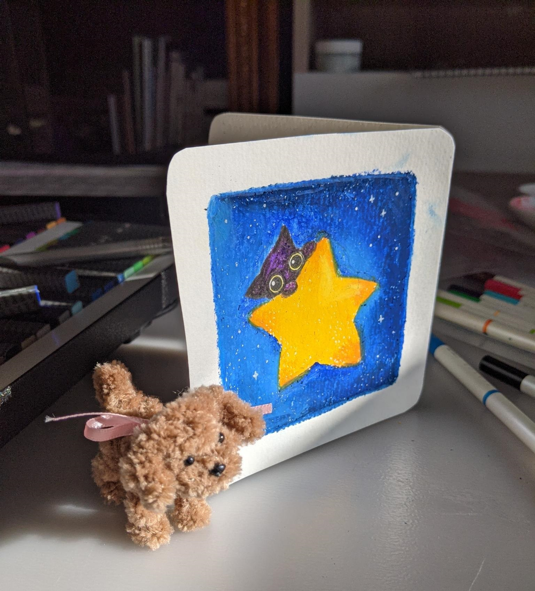
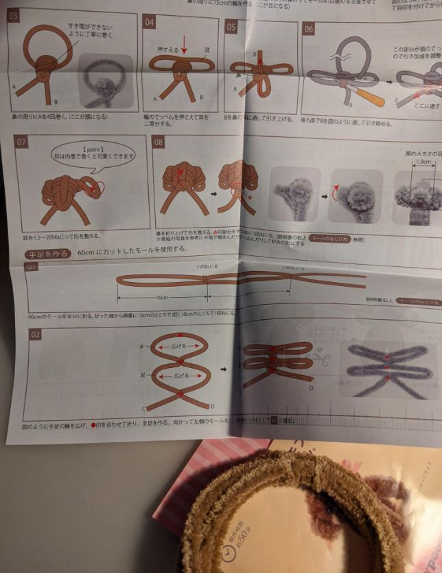
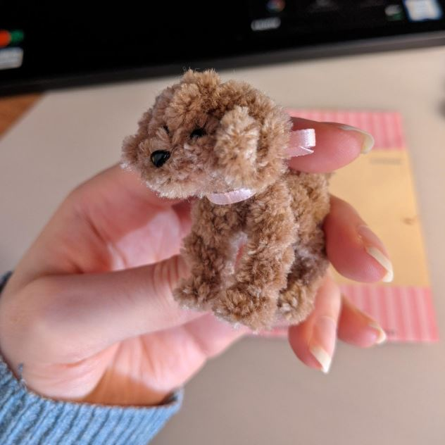
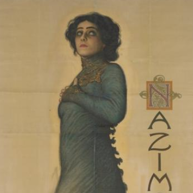
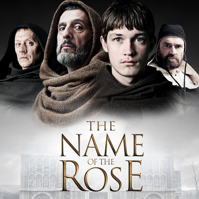
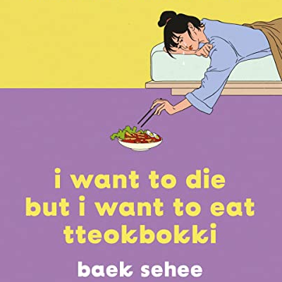

Sudomemo
Blog post · 2025-12-16Hoe ik een online gemeenschap ontdekte voor onhandige, vergeten animatiesoftware
Heb je ooit de SD kaart van een oude camera in je laptop gedaan?
Of heb je misschien een keer een oud schoolschrift opengeslagen om te kijken wat je erin getekend hebt?
Toen ik laatst door mijn Nintendo DS zat te kijken voelde ik datzelfde gevoel van nostalgie.
De simpele animaties die ik maakte stonden er nogsteeds op! En wat bleek? Er was een hele online gemeenschap die deze achterhaalde animatiesoftware nog steeds gebruikt!
Here's what I ended up making:
A card and a dog
I made the dog using a guide with a brown pipe cleaner:
every good decision starts with a noose...
I think he turned out pretty cute!
fluffy

A card and a dog
I made the dog using a guide with a brown pipe cleaner:

every good decision starts with a noose...
I think he turned out pretty cute!

fluffy
For the year of 2025, below are the notable medias:
Books:
Music tracks:
Books:
 |
The Cherry Orchard and Hedda Gabler Drama plays from 1904 and 1891 These old european/russian plays I enjoyed a lot, as they portrayed women as beings with real personalities!!! (including with real flaws!!). I know I am doing the works a disservice by associating them so closely, but I did like how the characters in it were so confident with expressing how miserable they were, and had no interest in serving others or putting others over themselves. |
 |
The Name of the Rose 1980 mystery fiction I haven't finished reading this book but I've thoroughly enjoyed it so far - highly recommended for those who haven't read it (apparently, all Europeans already have). It is LA Noire but for catholic monks. |
 |
I Want to Die but I Want to Eat Tteokbokki 2018 memoir I didn't particularly like this text, but I did appreciate the format - it is a series of scripts from the author's therapy sessions. I read it because my younger sister said she related to it and the author died recently (presumed suicide). Which made me go >___>. So I read the book and talked to her about it and things seem to be ok. |
- Sillage - I hate it when somebody says your name
[YouTube Link] - hemlocke springs - enknee1
[YouTube Link] - Malcolm Todd
[YouTube Link]